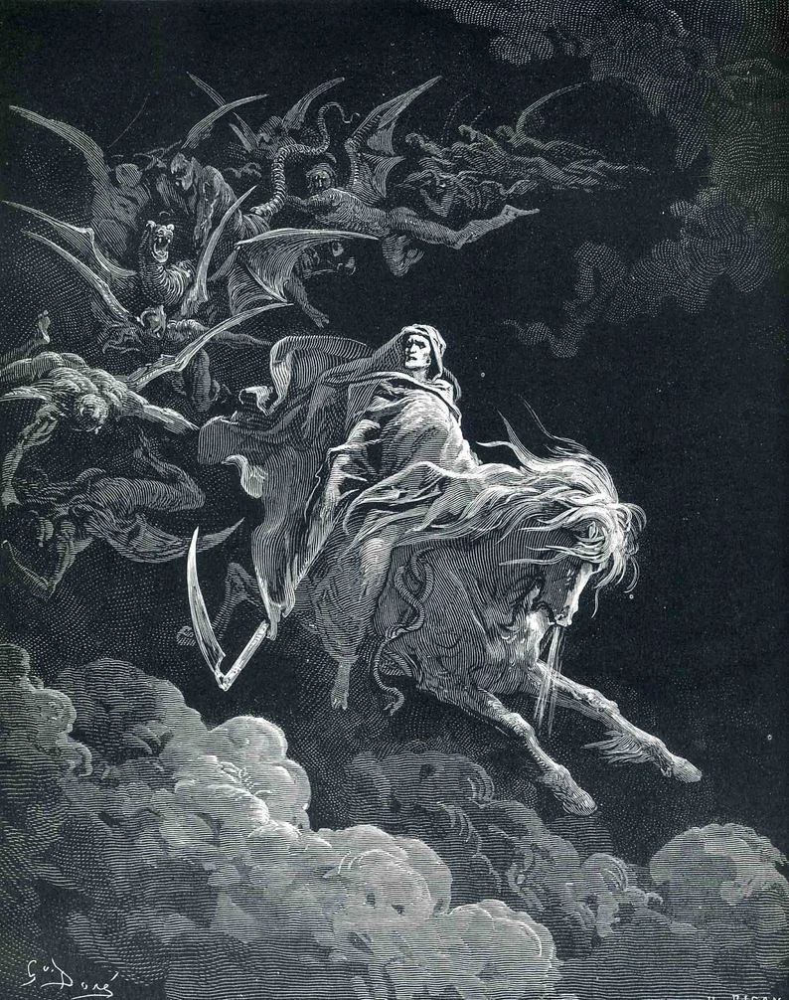
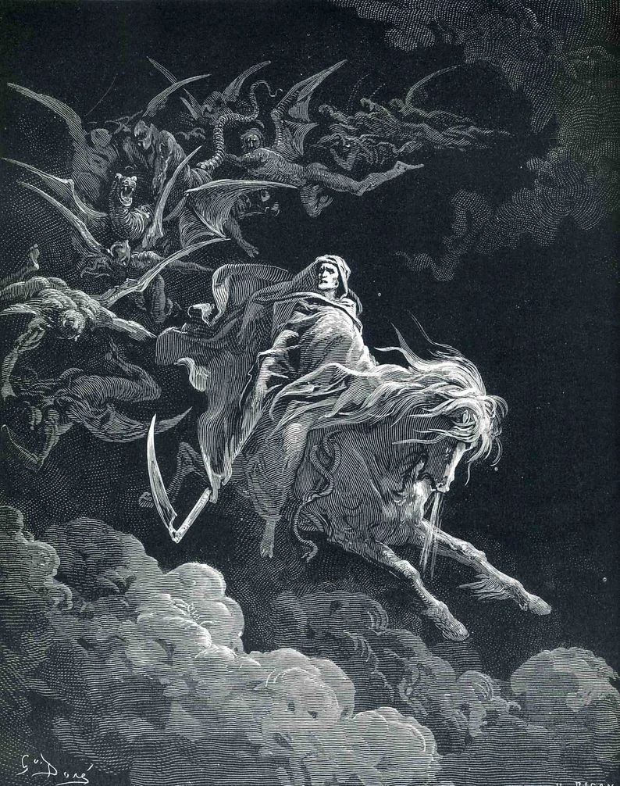

Gustave Dore
- Nacimiento:
6 de enero de 1832; Strasbourg, France
- Fallecimiento:
23 de enero de 1883; Paris, France
- Género:
Indefinido
- Campo:
Pintura, Ilustración, Grabado
- Institución:
Royal Academy of Arts
Es considerado uno de los artistas más famosos del siglo XIX, sus ilustraciones abarcan libros importantes como: La Biblia, La divina comedia, El paraíso perdido, El Quijote, entre otros grandes de la literatura universal. Este artista empezó a darse a conocer muy rápidamente, con tan solo 15 años dibujaba una litografía semanal para varios diarios. Estos dibujos eran para textos de Rabelais, Balzac o Perrault, que le dieron una fama instantánea. Estos lanzamientos en los diarios de sus dibujos traspasaron límites de países, logrando que retratara obras y libros escritas por Poe, Shakespeare, Dante, Milon o Cervantes. Tan popular se hizo, que cobró 10.000 libras esterlinas al año, unos 160.000 dólares. Doré se conoce como un ilustrador de excelencia, además de un visionario con una imaginación y capacidad de observación extremadamente brillantes. Pero, sobre todo, sus dibujos fueron y son un ejemplo de comunicación para las masas, viajando por las épocas, culturas e ideologías.